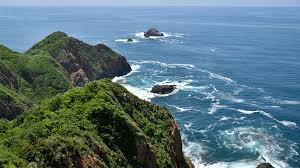
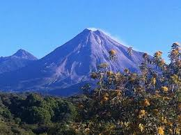
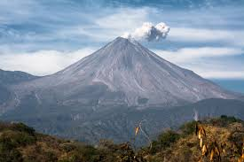

Información del lugar
Se ubica en el occidente del país, limita con Jalisco y Michoacán, y cuenta con costas en el océano Pacífico. Es uno de los estados más pequeños de México.

Ciudad tranquila y cálida del occidente de México
Colima es un estado del occidente de México conocido por su clima cálido, su tranquilidad y su riqueza natural.
Comenzar
Se ubica en el occidente del país, limita con Jalisco y Michoacán, y cuenta con costas en el océano Pacífico. Es uno de los estados más pequeños de México.

Destacan el Volcán de Fuego, las playas de Manzanillo y la Playa La Audiencia, ideales para el turismo y la naturaleza.

pequeñas tortillas fritas con carne deshebrada, salsa, lechuga, queso y crema.
versión sin caldo del pozole, preparado con maíz, carne y chile rojo, servido con acompañamientos.
carne de cerdo marinada en chile y especias, cocida lentamente hasta quedar muy suave.
Platillo espeso hecho con pollo deshebrado, masa de maíz y chile, muy tradicional en la región.
Pescado asado con salsa de chile, típico de las zonas costeras como Manzanillo.
Bebida tradicional a base de maíz fermentado, refrescante y ligeramente ácida.


Colima es un lugar que destaca por su tranquilidad, su clima cálido y la belleza de sus paisajes naturales. A pesar de ser uno de los estados más pequeños de México, ofrece una gran variedad de experiencias, desde la majestuosidad del Volcán de Fuego hasta la calma de sus playas. Su gastronomía refleja la identidad de la región y sus tradiciones siguen muy presentes en la vida diaria.
En general, Colima es un destino ideal para quienes buscan un ambiente relajado sin perder el contacto con la naturaleza y la cultura. Es un estado que, aunque no siempre es tan conocido como otros, tiene mucho que ofrecer y deja una experiencia muy agradable en quienes lo visitan.